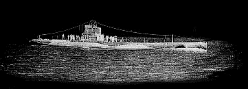

Добро пожаловать!
Этот сайт посвящен истории подводных лодок.
Вы можете прочитать эти статьи о истории развития подводного флота:
Изобретение инженера Бауэра
Турбина проффессора Вальтера
"Карликовые" субмарины
c
Captain
1998